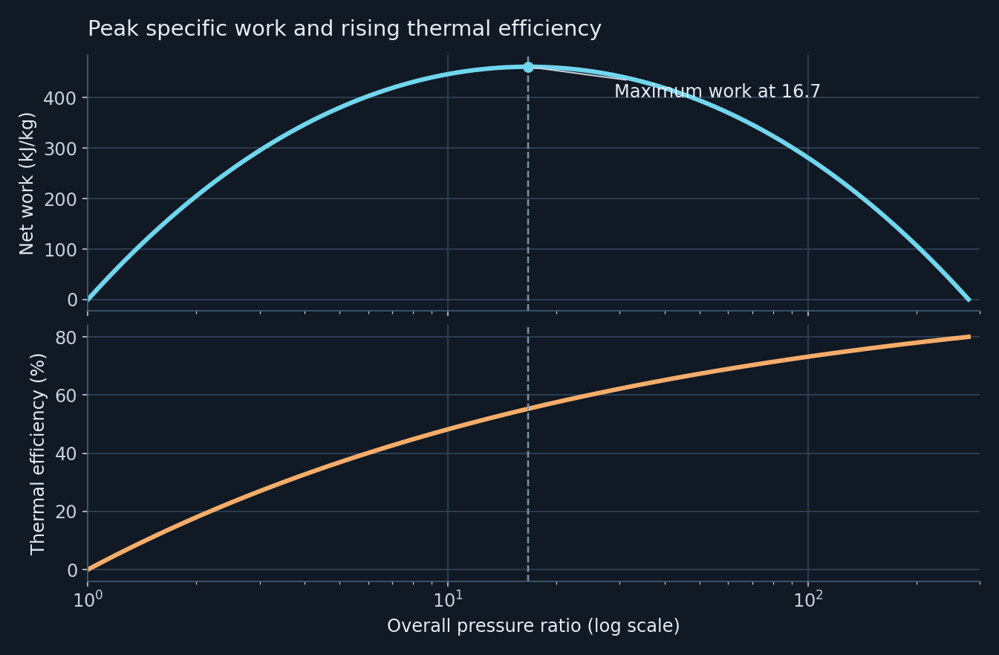

Chapter 10 · Lectures 30–32
Brayton Cycles
Derive the ideal gas-turbine cycle, find its maximum-work pressure ratio, and quantify how actual components and variable heat capacity change the result.
The 100 MW plant is considering a gas-turbine train instead of the steam train in Chapter 9. Its compressor takes in air at 300 K, and cooled turbine hardware permits a maximum gas temperature of 1500 K. A larger compressor pressure ratio increases ideal efficiency over the useful range. It can simultaneously reduce the work delivered by each kg of air. Choosing the ratio requires knowing which quantity the plant is trying to improve.
An air-standard gas turbine Lecture 30 · 11:40
A practical open gas turbine draws ambient air through a compressor, supplies energy in a combustor, expands the products through a turbine, and discharges exhaust. The air-standard model replaces the combustion and exhaust with external heating and cooling of a fixed-composition loop. Label compressor inlet, compressor exit, turbine inlet, and turbine exit as states 1–4. Neglect kinetic and potential energy changes. Treat the heat exchangers as isobaric, with \(p_1=p_4\), \(p_2=p_3\). Here \(p_i\) is the absolute pressure at state \(i\). Set \(r_p=p_2/p_1>1\).
Use a calorically perfect ideal gas with constant specific heats \(c_p\) at constant pressure and \(c_v\) at constant volume. Let \(\gamma=c_p/c_v\), \(R=c_p-c_v\), and \(a=(\gamma-1)/\gamma=R/c_p\). The specific enthalpy change is \(c_p\Delta T\), where \(T\) is absolute temperature. The steady-flow compressor input and turbine output are \(w_c=c_p(T_2-T_1)\) and \(w_t=c_p(T_3-T_4)\). The heat input magnitude is \(q_H=c_p(T_3-T_2)\) and rejection magnitude is \(q_L=c_p(T_4-T_1)\), with units kJ/kg. Then \(w_{\rm net}=w_t-w_c=q_H-q_L\). MIT Unified Engineering, Brayton cycle
Efficiency and maximum specific output Lecture 30 · 17:20
For reversible adiabatic compression and expansion, the entropy differential is \(ds=c_p\,dT/T-R\,dp/p\) and integrates with \(ds=0\). Define the temperature ratio \(X=r_p^a\). Then \(T_2=T_1X\) and \(T_4=T_3/X\). The identities \(T_4-T_1=(T_3-T_1X)/X\) and \(T_3-T_2=T_3-T_1X\) give
\[ \eta_{\rm th}=1-\frac{q_L}{q_H}=1-\frac1X,\qquad \frac{w_{\rm net}}{c_p}=T_3\left(1-\frac1X\right)-T_1(X-1). \]
At fixed \(T_1\) and \(T_3\), positive heat input and net output require \(1<X<T_3/T_1\). At the upper endpoint both heat duties vanish and the cycle has zero area; its formal limiting efficiency describes a vanishing-output engine. The derivative of \(w_{\rm net}/c_p\) with respect to \(X\) is \(T_3/X^2-T_1\) and the second derivative is negative. The unique maximum therefore lies at \(X^*=\sqrt{T_3/T_1}\), with \(T_2=T_4=\sqrt{T_1T_3}\). In the running case \(r_p^*=5^{1/(2a)}=16.72\). With \(c_p=1.005\) kJ/(kg K), the ideal work peaks at 460.65 kJ/kg, giving a flow of 217.1 kg/s per 100 MW. Lecture 30 · 23:20
At \(r_p=10\), the same gas constants give \(X=1.9307\), \(T_2=579.2\) K, \(T_4=776.9\) K, \(q_H=925.4\) kJ/kg and \(w_{\rm net}=446.1\) kJ/kg. The efficiency is 48.21%. The nearly flat specific-work curve near its maximum leaves room to select a lower ratio that supplies a hotter exhaust. That exhaust temperature will matter if the plant adds heat recovery.

Real compressor and turbine efficiencies Lecture 31 · 0:00
Let \(T_{2s}\) and \(T_{4s}\) denote the ideal exits at each actual exit pressure and the same respective inlet state. Use positive efficiencies \(\eta_c=w_{c,s}/w_c\) and \(\eta_t=w_t/w_{t,s}\). The actual component temperatures in the constant-\(c_p\) model are
\[ T_2=T_1+\frac{T_{2s}-T_1}{\eta_c},\qquad T_4=T_3-\eta_t(T_3-T_{4s}). \]
With \(\eta_c=0.88\) and \(\eta_t=0.91\) at \(r_p=10\), the net work falls to 342.42 kJ/kg and thermal efficiency to 38.60%. The flow required for 100 MW increases to 292.0 kg/s. The compressor discharge moves to a higher temperature and requires more shaft input. The hotter turbine exhaust carries energy that could have emerged as shaft work with a reversible expansion. Both actual adiabatic devices generate entropy.
With those efficiencies held constant as \(r_p\) changes, the work becomes \(w_{\rm net}/c_p=\eta_tT_3(1-1/X)-T_1(X-1)/\eta_c\). Differentiation gives \(X^*=\sqrt{\eta_c\eta_t T_3/T_1}\) if this value lies in the positive-work range. For the stated efficiencies and temperatures, \(X^*\approx2.001\) and \(r_p^*\approx11.33\). A real stage’s efficiency changes with its operating point, so this is an optimum of the constant-efficiency model.
Variable heat capacities and the air table Lecture 31 · 8:20
A thermally perfect ideal gas retains \(pv=RT\) and \(h=h(T)\) but allows \(c_p=c_p(T)\). Let \(s^\circ(T)\) be the entropy at fixed reference pressure \(p^\circ\). Integrating \(ds=(c_p(T)/T)dT-R\,dp/p\) gives \(s(T,p)=s^\circ(T)-R\ln(p/p^\circ)\). The isentropic compressor exit solves
\[ s^\circ(T_{2s})=s^\circ(T_1)+R\ln r_p. \]
Since \(d s^\circ/dT=c_p(T)/T>0\), interpolate a table of \(s^\circ\) to invert this relation. Relative pressure \(p_r(T)\) is a scaled tabular representation proportional to \(\exp[s^\circ(T)/R]\). Its ratio from two temperatures equals the physical pressure ratio on an isentrope. Likewise \(v_2/v_1=(T_2/T_1)(p_{r,1}/p_{r,2})\) along an isentrope. Air tables therefore list relative volume \(v_r(T)\) proportional to \(T/p_r(T)\). The scale factors cancel in ratios. Absolute values of \(p_r\) and \(v_r\) are tabular quantities.
In the Lecture 31 compressor example, 300 K air goes from 1 to 10 bar at \(\eta_c=0.92\). The table gives \(h_1=300.19\) kJ/kg and \(p_{r,1}=1.386\). At \(p_{r,2s}=13.86\), interpolate to find \(h_{2s}=579.865\) kJ/kg. Apply the efficiency to this reference enthalpy rise to obtain \(h_2=300.19+(579.865-300.19)/0.92\approx604.185\) kJ/kg. The specific shaft input is 304.0 kJ/kg. Interpolate again with the actual enthalpy to get \(T_2\approx597\) K. The actual exit and its isentropic reference have the same pressure and different entropies. Lecture 31 · 14:40 · Lecture 32 · 0:20
In the Lecture 32 air-table example, \(T_1=300\) K, \(T_3=1300\) K and \(r_p=30\). The two isentropes give \(p_{r,2}=30p_{r,1}\) and \(p_{r,4}=p_{r,3}/30\). Lookup then gives 488.92 kJ/kg compressor input, 851.62 kJ/kg turbine output, and 606.86 kJ/kg heat input. The net work is 362.70 kJ/kg, yielding 59.77% thermal efficiency. With a 1300 K heat source and a 300 K environment and sink, source exergy is \(606.86(1-300/1300)=466.82\) kJ/kg. A plant boundary with net shaft work as its sole product gives \(362.70/466.82\approx77.7\%\). The lecture's gross accounting counts turbine output as product and compressor input plus heat exergy as resources, giving \(851.62/(488.92+466.82)\approx89.1\%\). Both balances leave about 104.1 kJ/kg of exergy destruction. The lecture locates about 38.5 kJ/kg in the heater and 65.6 kJ/kg in the cooler under its reservoir assumptions.
The same properties permit a steady entropy balance or a heat-source exergy budget. The first-law result alone does not determine the exergy input. A single source at \(T_H\) would deliver \((1-T_0/T_H)q_H\) relative to \(T_0\). If the combustion chemistry is represented explicitly, fuel chemical exergy is a different input. The pressure-ratio conclusions also omit pressure losses, ambient variation, turbine cooling flow, and changing gas composition. Lecture 32 · 10:20
Numerical laboratory
Run the Python laboratory with standard Python. It accepts temperatures, pressure ratio, specific heat, heat-capacity ratio, and separate component efficiencies. It returns exit temperatures, net work in kJ/kg and thermal efficiency. It rejects inputs that fail to describe a positive-work engine. The checks test the maximum-work condition, neighboring operating points, and the penalty from component losses.
Exercises and worked solutions
Endpoint check
Find the formal zero-heat-input pressure ratio for 300 and 1500 K.
Show solution
Solution. Heat addition ends when \(T_2=T_3\) or \(X=5\). Thus \(r_p=5^{1/a}=5^{3.5}\approx279.5\). Expansion also returns the gas to \(T_1\). The formal limiting efficiency approaches 80%, while shaft output and heat input both approach zero.
Back work
At \(r_p=10\) with ideal components, how much of turbine work runs the compressor?
Show solution
Solution. The magnitudes are \(1.005(579.209-300)=280.61\) kJ/kg and \(1.005(1500-776.921)=726.69\) kJ/kg. Their ratio is 38.61%. The difference of 446.09 kJ/kg drives the external load.
Relative pressure
An air table lists \(p_r(T_1)=1.35\) and an outlet candidate with \(p_r=12.15\). Which isentropic pressure ratio does this candidate represent?
Show solution
Solution. Divide the relative pressures to cancel their arbitrary scale. The ratio is \(12.15/1.35=9.00\). If physical inlet pressure is 105 kPa, the physical outlet is 945 kPa.
Entropy check on the actual compressor
At \(r_p=10\), determine the entropy generated per kg for the insulated compressor at \(\eta_c=0.88\).
Show solution
Solution. Its exit is \(300+(579.209-300)/0.88=617.28\) K. With \(R=c_p(0.4/1.4)=0.28714\) kJ/(kg K), the entropy rise is \(1.005\ln(617.28/300)-R\ln 10\approx0.0640\) kJ/(kg K). There is no heat-entropy transfer, so the positive rise equals the internal generation.